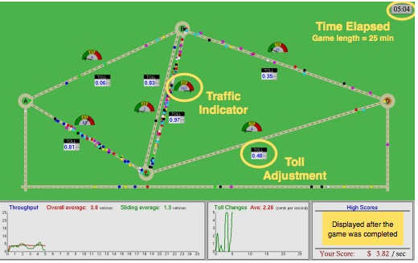
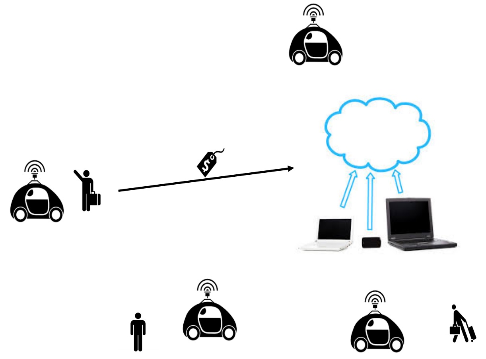
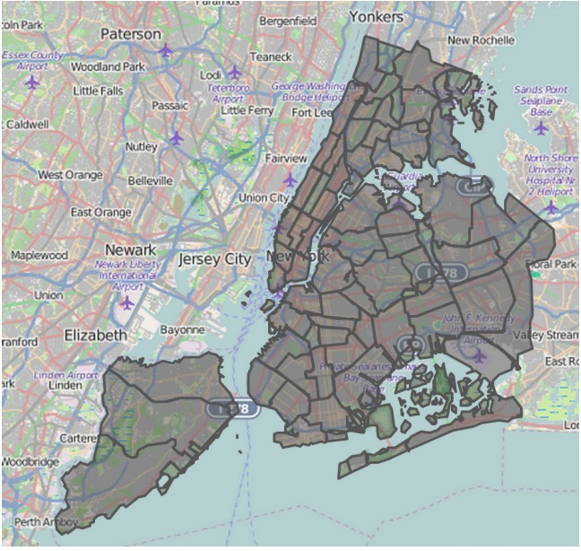

Research
My research is driven by the following intriguing question: how can we establish, maintain and regulate the interactions between humans and agents (e.g., machines, and humans) for desired outcomes (e.g., social good, profit maximization)? A critical step is to understand the roles of incentives, institutions and norms in large-scale multi-agent interactions through prediction, learning and games. To this end, I delve into the interdisciplinary research that spans multi-agent systems, game theory, human-agent interaction, and social computing. My current work focuses on: (1) resilient mechanism design, and its application to online platforms and networks where agents may not be able to obtain perfect rationality; (2) strategic diffusion in large-scale networks with application to advertisement, auctions, and cybersecurity; and (3) online learning in strategic decision making. Typical methodologies include information design, mechanism design, social influence theory, learning and optimization in sequential decision making, and multi-agent simulation.
Recent Publications
full list countdown- W. Shen, A. A. Khemeiri, A. Almehrezi, W. Al-Enezi, I. Rahwan, and J. W. Crandall
Regulating Highly Automated Robot Ecologies: Insights from Three User Studies.
In Proceedings of the Fifth International Conference on Human-Agent Interaction.
HAI 2017, Bielefeld, Germany. Winner of the Best Student Paper Award.
Paper, DOI, Review, BibTeX, Slides, Code, Media: Heise onlineW. Shen, C. V. Lopes, and J. W. Crandall
An Online Mechanism for Ridesharing in Autonomous Mobility-on-Demand Systems.
In Proceedings of the 25th International Joint Conference on Artificial Intelligence.
IJCAI 2016, New York, NY.
Paper, DOI, BibTeX , Presentation, PosterW. Shen and C. V. Lopes
Managing Autonomous Mobility on Demand Systems for Better Passenger Experience.
In Proceedings of the 18th International Conference on Principles and Practice of Multi-Agent Systems.
PRIMA 2015, Bertinoro, Italy.
Paper, DOI, BibTeX , Presentation
Miscellaneous
Awards
Student Travel Award, AAMAS, 2018
Best Student Paper Award, International Conference on Human-Agent Interaction, 2017
Student Travel Grant (US$2,500), Masdar Institute of Science and Technology, 2013
Outstanding Undergraduate Thesis Award, Northwestern Polytechnical University, 2009
Best Student Paper Award, International Conference on Human-Agent Interaction, 2017
Student Travel Grant (US$2,500), Masdar Institute of Science and Technology, 2013
Outstanding Undergraduate Thesis Award, Northwestern Polytechnical University, 2009
Reviewing
Conference Reviewer: HRI 2016-2018, HAI 2017, CHI 2017
Journal Reviewer: IEEE Trans Syst Man Cybern Syst (2017), INT J ELEC POWER (2013)
Sub-reviewer: Transportation Science (2017)
Journal Reviewer: IEEE Trans Syst Man Cybern Syst (2017), INT J ELEC POWER (2013)
Sub-reviewer: Transportation Science (2017)
Teaching
Reader, ICS45J - Programming In JAVA, Spring 2018
Assistant, INF295 - Distributed Interactive Simulation, Spring 2016 Reader, INF124 - Internet Applications Engineering, Spring 2015
Reader, INF225/CS221 - Information Retrieval, Winter 2015
Reader, INF43 - Introduction to Software Engineering, Fall 2014
Assistant, INF295 - Distributed Interactive Simulation, Spring 2016 Reader, INF124 - Internet Applications Engineering, Spring 2015
Reader, INF225/CS221 - Information Retrieval, Winter 2015
Reader, INF43 - Introduction to Software Engineering, Fall 2014